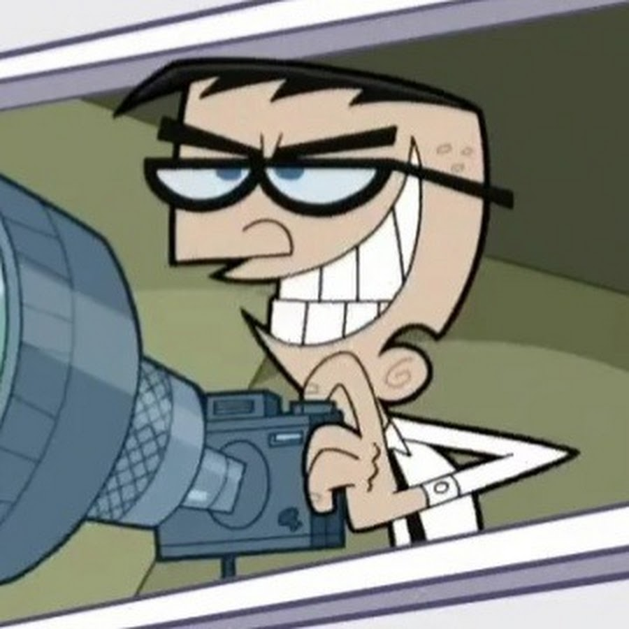

How to Take a Good Photo
Preparing:
1. Clothes - Make sure you are wearing mismatching clothes. Examples: Opposite colors like red and green or orange and blue, same colored pants and shirt, mismatching different length socks for the cherry on top.
2. Hair - Ruffle your hair up. If it is long enough cover your face so that you won't be caught by the camera.
3. Glasses - If you have glasses, great! If not, no worries! Get the most uncomfortable looking sunglasses that exist. When setting up their photo position, remember - you want to be original! Examples for possible setups: you can have them on one eye or handing from your mouth.
Posing:
1. Position - There are two good options, the very back, where you are barely seen, or the front, when you are so close that it is impossible to make out what the object in the photo is.
2. Hands - Remember, you want to be original! There's no shame in making up new signs. Always try to mix up, the signs in the different hands should not be matching! Examples: One hand held as though you are holding a fork with spaghetti, the other jazz hand or one hand as a phone and the other pinching your nose.
3. And most importantly: Face - You always want to look as if you smell something stinky. Crumple up your nose as much as you can! Also, you should be squinting. It might help to also look at your nose, it gives you a cool cross-eyed look. Stick your tongue out all the way, and keep your mouth open wide.
Pro tip: It can help to think about a very uncomfortable or stressful situation, it gives you some great expressions.
Last tip:
Have self-confidence, you've got this!
And last but not least - Say Cheese!
